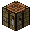

插件名稱: Kycraft
插件原文: 點我
控制所有非正常的合成表, 以及各種有附加能力的裝備及武器, 和武器的強化精煉系統.
強化系統介紹: (以工作臺 中的九宮格作範例)
A位置代表的是 被強化的武器
B位置代表的是 該武器所對應的強化道具 , 基本上一般的裝備都是使用 強化石
C位置代表的是 強化符咒 , 可以提升強化的成功機率和 降低裝備強化失敗時的消失機率
強化失敗的物品, 將會變成 泥土 , 所以在強化時, 請自行拿捏好使用的東西!
--返回至插件列表--